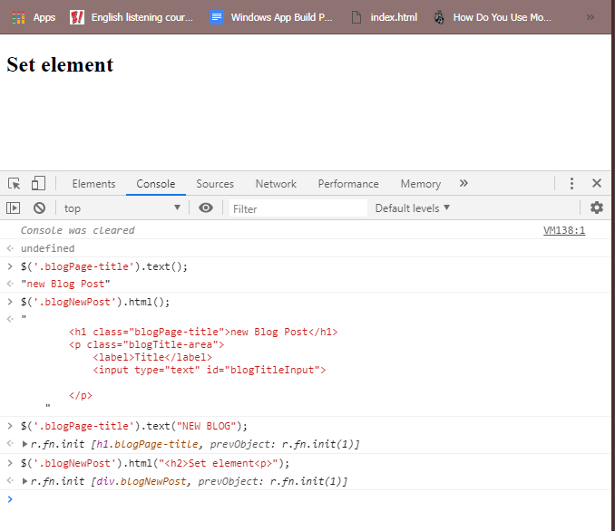
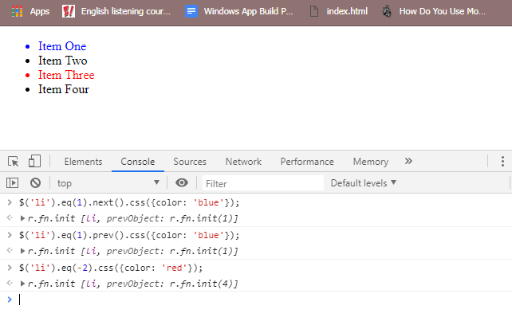

Introduction
JQuery တွေကို JavaScript library တွေမှာကျယ်ကျယ်ပြန့်ပြန့်အသုံးပြုပြီးတော့ web page တွေမှာအပြန်အလှန်ပြုမှုလုပ်ဆောင်ပုံတွေကိုလွယ်ကူပြီးလျှင်မြန်စွာထပ်ထည့်နိုင်အောင်ကူညီပေးပါတယ်။ကျွန်တော်တို့တွေက animations တွေ web page တွေပေါ်မှာ element တွေကို manipulate ပြုလုပ်တာတွေ၊ user interactions တွေ response ပြန်တာတွေ ၊ regular JavaScript တွေနဲ့ ajax တွေကို request ပြုလုပ်တာတွေကို ထပ်ပြီးထည့်နိုင်ပါတယ်။jQuery တွေက ရိုးရှင်းပြီး၊ လွယ်ကူပြီး ၊အလိုလိုသိသောနည်းလမ်းတွေကို web pages တွေနဲ့အပြန်အလှန်လုပ်ဆောင်ဖို့အတွက်ပါရှိတာပဲဖြစ်ပါတယ်။DOM document object model ဆိုတာကတော့ ကျွန်တော်တို့ရဲ့ web page ကိုကိုယ်စားပြုပါတယ်။ကျွန်တော်တို့ web page ရဲ့ content တွေ elements တွေပေါ်မှာ element တွေကိုလက်ခံဖို့အတွက် ကျွန်တော်တို့ javaScript တွေ JQuery တွေကိုအသုံးပြုနိုင်ပါတယ်။ နောက်ပြီးကျွန်တော်တို့ကအဲ့တာတွေနဲ့ font-size ပြောင်းတာတွေ texture တွေ modifined ပြုလုပ်တာတွေကိုကျွန်တော်တို့ ပြုလုပ်နိုင်ပါတယ်။JQuery ထဲမှာရှိတဲ့ convenient methods တွေအကုန်လုံးကိုကျွန်တော်တို့လေ့လာရမှာဖြစ်ပါတယ်။နောက်ပြီးမတူညီတဲ့ css selector တွေကို page ပေါ်မှာရှိတဲ့ element တွေကို manipulate ပြုလုပ်ဖို့နဲ့choose ပြလုပ်ဖို့အသုံးပြုနိုင်ပါတယ်။နောက်ပြီးကျွန်တော်တို့ DOM traversal ဆိုတာကိုလည်းလေ့လာသွားရမှာဖြစ်ပါတယ်။JQuery တွေပေးလိုက်ရင်ကျွန်တော်တို့တွေက page ပေါ်မှာရှိတဲ့ element တွေကို element တွေရဲ့တိကျတဲ့ class တွေ ID တွေမပါပဲဘယ်လိုရွှေ့ပြီးအသုံးပြုနိုင်သလဲဆိုတာတွေကိုလေ့လာရမှာပဲဖြစ်ပါတယ်။
jQuery_ History and Relevance Today
JQuery ဟာ mid-2000s မှာစပြီးလူသိများလာပါတယ်။Browser တွေဖြစ်တဲ့ Explorer,Firefox, Chrome, Safari စတာတွေက DOM programming ကိုချုပ်ကိုင်ပြီးတော့ JQuery တွေမှာခြားနားချက်တွေအများကြီးရှိတဲ့အချိန်မှာလူသိများလာတာပဲဖြစ်ပါတယ်။Browser တစ်ခုမှာပဲအလုပ်လုပ်ပြီးတော့ အခြားတစ်ခုမှာအလုပ်မလုပ်ဘူးဆိုရင် JavaScript programmer တွေအများစုကအချိန်တွေအကုန်ခံပြီး testing တွေ code fixing ဖြစ်တာတွေကိုပြုလုပ်ရပါတယ်။အဲ့တာတွေကငြီးငွေ့စရာကောင်းတဲအတွက် browser တွေအားလုံးပေါ်မှာကောင်းမွန်အောင်အလုပ်လုပ်နိုင်တဲ့ tool တွေကို JQuery ကထောက်ပံ့ပေးနိုင်ပါတယ်။JavaScript တွေက browser တွေရဲ့version တိုင်းမှာကောင်းမွန်စွာအလုပ်လုပ်ပေးကြပါတယ်။နောက်ထပ် native method အသစ်တွေကတော့ querySelector နဲ့ querySelectorAll တွေဖြစ်ပြီး အဲ့တာတွေကို DOM API ထဲမှာထပ်ထည့်ပြီး element တွေကို select ပြလုပ်ဖို့အတွက်လွယ်ကူစွာပြုလုပ်ပေးပါတယ်။JQuery တွေအားလုံးကို websites တွေတော်တော်များများမှာအသုံးပြုနေကြပါတယ်။ JQuery expect တွေကို simple project တွေတည်ဆောက်ဖို့အတွက်၊ plugins တွေမှာအသုံးပြုဖို့အတွက်၊ တည်ရှိပြီးသား code တွေကိုထိမ်းသိန်းရန်အတွက်၊ webpages တွေကို interactivity တွေထပ်ထည့်ဖို့အတွက်စတာတွေမှာအသုံးပြုပါတယ်။ ဒါပေမယ့်ရှုပ်ထွေးတဲ့ websites တွေကိုတည်ဆောက်ဖို့အတွက်တော့ JQuery တွေကိုအသုံးပြုမှာမဟုတ်ပါဘူး။prototyping တွေ websites တွေကို features တွေထပ်ထည့်ဖို့ရန်နဲ့ သေးငယ်တဲ့ project တွေအတွက် JQuery တွေကအတော်အသင့်အသုံးဝင်ပါတယ်။ ကျွန်တော်တို့က JQuery တွေကိုအသုံးပြုသင့်ပါတယ်။ဘာ့ကြောင့်လဲဆိုတော့ကျွန်တော်တို့တွေက လွယ်ကူစွာနဲ့စိတ်ဝင်စားစွာ web development တွေကို designed ပြုလုပ်နိုင်လို့ပဲဖြစ်ပါတယ်။
jQuery vs. JavaScript
ကျွန်တော်တို့ဒီတစ်ခါမှာတော့ jQuery တွေကို javaScript ထဲမှာအသုံးပြုပုံတွေကိုလေ့လာသွားမှာဖြစ်ပါတယ်။ JavaScript ထဲကနေ class တွေ ID တွေစတဲ့ selector တွေကိုခေါ်ပြီးတော့အသုံးပြုနိုင်ပါတယ်။ကျွန်တော်တို့အောက်မှာရေးပြထားတဲ့ ဥပမာထဲမှာကျွန်တော်တို့ green color နဲ့
div တစ်ခုကို box ဆိုတဲ့ class တစ်ခုသတ်မှတ်ပြီး hide ပြထားပါတယ်။နောက်ပြီး jQuery အတွက် js file ကို download ပြုလုပ်၍အသုံးပြုနိုင်ပါတယ်။ (JQuery 3.2.1 DOWNLOAD)
JQuery file ကိုကျွန်တော်တို့အသုံးမပြုခင်က class selector ကိုခေါ်ပြီးသုံးဖို့အတွက် querySelector ဆိုတာကိုအသုံးပြုပြီးခေါ်ပေးရပါတယ်။JQuery file ကိုအသုံးပြုတဲ့အခါမှာတော့ JQuery ဆိုတဲ့ keyword ကိုအသုံးပြုပြီးနောက်မှာ parenthesis လိုက်ပေးရပါတယ်။အဲ့ဒီထဲမှာ
css selector ကိုထည့်ပေးရမှာပဲဖြစ်ပါတယ်။JQuery အစား $ dolla sign ကိုအသုံးပြုနိုင်ပါတယ်။ကျွန်တော်တို့တွေ code တွေကိုတိုတိုနဲ့လိုရင်းကိုရေးနိုင်တာပဲဖြစ်ပါတယ်။ဥပမာထဲမှာကျွန်တော်တို့ alert တွေနဲ့ဖော်ပြဖို့ရန်အတွက်ရေးပြထားတာပဲဖြစ်ပါတယ်။
//const box = document.querySelector('.box');
// box.style.display = 'none';
// jQuery('.box').hide();
//$('.box').hide();
// box.addEventListener('click', function() {
// alert("You clicked me!");
// });
$('.box').click(function() {
alert("you click with jquery.");
});
Animating Elements with jQuery
JQuery တွေမှာ DOM တွေကိုလွယ်ကူအောင် manipulate ပြုလုပ်ဖို့အတွက်ကူညီနိုင်တဲ့ method တွေအများကြီးရှိပါတယ်။Manipulating DOM element တွေမှာဆိုရင် hide ထားတဲ့ element တွေကိုပြန်ပြီးမြင်နိုင်ဖို့ရန်အတွက်ချိန်ညှိပေးတာတွေ ၊ elememt styling တွေကိုပြောင်းလဲဖို့အတွက်နဲ့ element တွေရဲ့ attributres တွေ သို့မဟုတ် content တွေကို modifying ပြုလုပ်တာတွေ deleting ပြုလုပ်တာတွေ adding ပြုလုပ်တာတွေစတာတွေရှိပါတယ်။Vasibility methods တွေကတော့ fadeIn နဲ့ fadeOut ဆိုတာပဲဖြစ်ပါတယ်။အဲ့တာတွေကတော့ time ပေါ်မှာမူတည်ပြီးတော့ opacity တွေကိုပြောင်းလဲတာပဲဖြစ်ပါတယ်။slideDown နဲ့ slideUp ဆိုတာကတော့ element တွေရဲ့ sliding ပြလုပ်တဲ့ motion တွေအတွက်အသုံးပြုတာပဲဖြစ်ပါတယ်။animation နှစ်ခုကြားမှာရှိတဲ့နှောက်နှေးကြန့်ကြာမှုကိုသတ်မှတ်နိုင်ဖို့အတွက် delay ဆိုတဲ့ method ကိုအသုံးပြုနိုင်ပါတယ်။ကျွန်တော်တို့ ဥပမာထဲမှာတော့ flash message တွေကိုတည်ဆောက်ပြီးတော့ animation methods တွေအတွက် details တွေနဲ့ လှပတဲ့ effects တွေကိုဘယ်လိုတည်ဆောက်ပြီးဘယ်လိုအသုံးပြုသလဲဆိုတာတွေကိုပါထပ်ပြီးလေ့လာသွားမှာဖြစ်ပါတယ်။ flash message ဆိုတာကတော့ warning, conformation တွေလိုမျိုး user တွေကို alert နဲ့ temporary message တွေကိုပြဖို့အတွက် designed ပြုလုပ်ထားတာပဲဖြစ်ပါတယ်။အဲ့တာကြောင့် အဲ့ဒီ message တွေကခနလေးပဲပြပြီးပြောက်သွားမှာဖြစ်ပါတယ်။ကျွန်တော်တို့ဥပမာထဲမှာ hide ထားဖို့အတွက် hide method ကိုသုံးထားပါတယ်။ရေးပုံရေးနည်းကိုတော့အောက်ပါ ဥပမာထဲမှာကျွန်တော်တို့လေ့လာနိုင်ပါတယ်။ method တွေရဲ့ parenthesis တွေထဲမှာအချိန်တွေကိုသတ်မှတ်ပေးထားနိုင်ပါတယ်။ selector တစ်ခုတည်းမှာ method တွေအများကြီးအသုံးပြုတဲ့အခါ အတိုကောက်ရေးနည်းတွေနဲ့လည်းရေးနိုင်ပါတယ်။
$('#flashMessage').hide();
$('#flashMessage').fadeIn(1000);
$('#flashMessage').delay(3000);
$('#flashMessage').slideUp();
// Short term method same above all
$('#flashMessage').hide()
.slideDown(1000)
.delay(3000)
.slideUp();
Changing Content Inside Elements
JQuery တွေကကျွန်တော်တို့ html ထဲမှာရှိတဲ့ text တွေကို modify, update , change နဲ့ create တွေကိုလွယ်ကူစွာပြုလုပ်ဖို့အတွက်မတူညီတဲ့ method တွေအများကြီးရှိပါတယ်။ကျွန်တော်တို့စပြီးလေ့လာရမှာကတော့ JQuery တွေကိုအသုံးပြုပြီးတော့ webpage ထဲကို HTML တွေကိုဘယ်လိုယူတယ်
ဘယ်လိုထည့်တယ်ဆိုတာတွေကိုလေ့လာရမှာပဲဖြစ်ပါတယ်။အဲ့လိုမျိုး method တွေကတော့ getter နဲ့ setters ပဲဖြစ်ပါတယ်။HTML method မှာ argument မပါဘူးဆိုရင် getter method ဖြစ်ပါတယ်။ဘာ့ကြောင့်လဲဆိုတော့ အဲ့တာက value တွေကိုယူနိင်လို့ပဲဖြစ်ပါတယ်။argument
တွေပါတာကိုတော့ setter လို့ခေါ်ပါတယ်။ဘာ့ကြောင့်လဲဆိုတော့ အဲ့တာတွေက value တွေကိုသတ်မှတ်ထားခဲ့နိုင်လို့ပဲဖြစ်ပါတယ်။ကျွန်တော်တို့ ပုံထဲမှာပြထားသလိုပဲ h1 ရဲ့ text တွေကိုယူချင်လို့ argument တွေမပါပဲရေးပေးထားတာပဲဖြစ်ပါတယ်။နောက်ထပ်တစ်ခုကတော့
Html tag တွေကိုပါထုပ်ပြထားတာပဲဖြစ်ပါတယ်။ကျွန်တော်တို့သတ်မှတ်လိုက်တဲ့ element ထဲမှာရှိတဲ့ nested element တွေအကုန်လုံးကိုထုပ်ပေးမှာပဲဖြစ်ပါတယ်။အဲ့တာတွေကတော့ get method တွေကိုအသုံးပြုထားတာပဲဖြစ်ပါတယ်။ set method တွေကိုအသုံးပြုပြီးလည်းကျွန်တော်တို့ပြုလုပ်နိုင်ပါတယ်။
The follow pic show getter method.

//The following code show set method.
const title = "My First Blog Post";
const content = "This is my first Post!";
$('#blogTitlePreview').text(title);
$("#blogContentPreview").text(content);
Getting Values from Form Fields
ကျွန်တော်တို့ဒီတစ်ခါမှာတော့ user တွေဆီကနေ information တွေကိုယူပြီးတော့ပြုလုပ်ပေးမှာကိုလေ့လာသွားမှာဖြစ်ပါတယ်။HTML နဲ့ text methods တွေကtext input တွေ text area တွေလိုမျိုး input တွေကနေ information တွေကိုယူပြီးတော့အသုံးမပြုနိုင်ပါဘူး။အဲ့တာကြောင့်ကျွန်တော်တို့က
jQuery ထဲက val ဆိုတဲ့ method ကိုသုံးပြီးယူသုံးနိုင်ပါတယ်။အောက်ပါဥပမာထဲမှာတော့ကျွန်တော်တို့ preview ဆိုတဲ့ button ကိုနှိပ်လိုက်တဲ့အခါ input box ထဲမှာရှိတဲ့ text တွေကိုယူပြီးတော့အောက်မှာဖော်ပြမှာပဲဖြစ်ပါတယ်။အဲ့တာကြောင့်ကျွန်တော်တို့
input တွေထဲမှာရှိတဲ့ user တွေထည့်လိုက်တဲ့ text တွေကို getter method နဲ့ variable တစ်ခုထဲကိုကြေငြာပြီးတော့ထည့်ထားပေးရပါတယ်။အဲ့ဒီကြေငြာခဲ့တဲ့ variable ကို val ဆိုတဲ့ set method နဲ့browser ပေါ်မှာဖော်ပြဖို့ထည့်ပေးရတာပဲဖြစ်ပါတယ်။ဥပမာထဲမှာတော့
flash method ကို button နှိပ်တဲ့အခါမှအလုပ်လုပ်ဖို့ရန်အတွက် function ထဲမှာထည့်ပေးခဲံရမှာဖြစ်ပါတယ်။
$('#flashMessage').hide();
$('#previewButton').click(function() {
console.log("bottom work");
const title = $('#blogTitleInput').val();
console.log(title);
const content = $('#blogContentInput').val();
$('#blogTitlePreview').text(title);
$("#blogContentPreview").text(content);
$('#flashMessage')
.slideDown(1000)
.delay(1000)
.slideUp();
});
Adding jQuery to a Project
ကျွန်တော်တို့ဆက်ပြီးလေ့လာသွားမှာကတော့ ရိုးရှင်းတဲ့ spoiler reveal alertဆိုတဲ့ဥပမာ တွေတည်ဆောက်ပုံတွေကိုဆက်ပြီးလေ့လာသွားမှာဖြစ်ပါတယ်။reveals ဆိုတာကတော့ ကျွန်တော်တို့ button ကိုနှိပ်လိုက်တဲ့အခါမှာ secret message တွေထွက်ပေါ်လာမှာပဲဖြစ်ပါတယ်။နောက်ပြီးကျွန်တော်တို့
JQuery တွေနဲ့ DOM ထဲကို element တွေဘယ်လိုထည့်မလဲဆိုတာတွေကိုပါလေ့လာသွားမှာဖြစ်ပါတယ်။onMethod ကိုသုံးပြီး event handling ပြုလုပ်တာတွေ DOM traversal တွေရဲ့အခြေခံတွေကိုလည်းလေ့လာသွားမှာဖြစ်ပါတယ်။ကျွန်တော်တို့ JQuery ကိုအသုံးပြုဖို့အတွက်
JQuery source file လိုအပ်ပါတယ်။အဲ့ဒီ JQuery file ကိုကျွန်တော်တို့ HTML file ထဲကနေ link ပြုလုပ်ပြီးခေါ်သုံးရမှာပဲဖြစ်ပါတယ်။link ကိုတော့ html page ရဲ့အောက်ဆုံးမှာရေးပြထားပါတယ်။ကျွန်တော်တို့ page က brower ပေါ်မှာစပြီး run တဲ့အခါမှာ html
file တွေ CSS file တွေကိုစပြီး load လုပ်ပါတယ်ပြီးမှ js file တွေနဲ့ element တွေကို Manipulate ပြုလုပ်ပါတယ်။အဲ့တာက browser တွေကိုပိုပြီးမြန်ဆန်စေပါတယ်။နောက်ထပ်နည်းလမ်းတစ်ခုကတော့ project တွေထဲမှာကျွန်တော်တို့ CDN တွေကိုသုံးပြီးတော့ JQuery
တွေကိုထပ်ထည့်နိုင်ပါတယ်။အဲ့ဒီ content delivery network တွေကိုအသုံးပြုတဲ့အခါမှာတော့ third party service တွေဖြစ်တဲ့ JQuery file တွေပါတဲ့ google host တွေလိုမျိုးအသုံးပြုနိုင်ပြီး external link တွေနဲ့ချိတ်ဆက်ပြီးအသုံးပြုနိုင်ပါတယ်။JQuery
file ရဲ့ url တွေကို script tag ထဲက src attribute ထဲမှာခေါ်ပေးရမှာပဲဖြစ်ပါတယ်။JQuery တွေကိုအသုံးပြုနည်းတွေကို api.jquery.com ဆိုတဲ့ size မှာသွားပြီးလေ့လာနိုင်ပါတယ်။
jQuery ထဲမှာ element တွေကို select ပြုလုပ်တဲ့အခါမှာလည်း descendants selector တွေကိုအသုံးပြုနိုင်ပါတယ်။ဥပမာထဲမှာလည်း descendants selector တွေကိုအသုံးပြုနိုင်ပါတယ်။
//Hide the spoiler text
$('.spoiler span').hide();
//Menu the button is pressed
$('.spoiler button').click(function() {
//Show the spoiler text
$('.spoiler span').show();
//Hide the "Reveal Spoiler" button
$('.spoiler button').hide();
});
Adding New Elements to the DOM
Browser တွေမှာကျွန်တော်တို့ JavaScript တွေကိုခနဖြုတ်ထားပြီးကြည့်နိုင်ပါတယ်။အဲ့လိုဖြုတ်ထားကြည့်ဖို့အတွက် browser မှာ Inspect ထောက်ပြီးတော့ setting ထဲကိုသွားရပါမယ်။setting ထဲမှာမှ javaScript ကို disable ပြုလုပ်ပေးထားရပါမယ်။အဲ့ဒီအခါမှာတော့ page ပေါ်မှာရှိတဲ့
javaScript တွေနဲ့အလုပ်လုပ်ထားတဲ့ things တွေကအလုပ်လုပ်မှာမဟုတ်ပါဘူး။ထပ်ပြီးတော့ကျွန်တော်တို့ ဥပမာထဲမှာ JQuery တွေကိုအသုံးပြုပြီး dynamically အရ button တွေတည်ဆောက်ပုံတွေကိုပြောပြပေးထားမှာဖြစ်ပါတယ်။ဥပမာထဲမှာထည့်ပြီးသုံးထားတဲ့ prepend
function ဆိုတာကတော့program ကို run တဲ့အခါမှာကျွန်တော်တို့သတ်မှတ်လိုက်ထားတဲ့ element အတွင်းထဲမှာရှိတဲ့အစဆုံးchild element အဖြစ်ဖော်ပြသွားမှာဖြစ်ပါတယ်။append function ဆိုတာကတော့ကျွန်တော်တို့ program တွေကို browser ထဲမှာ run တဲ့အခါမှာ
prepend function နဲ့ပုံစံတူပြီး element ကိုတော့သတ်မှတ်ထားတဲ့ parent element တွေရဲ့အတွင်းထဲမှာရှိတဲ့ child element တွေရဲ့နောက်ဆုံးမှာသွားပြီးသတ်မှတ်မှာဖြစ်ပါတယ်။ဥပမာတွေထဲမှာ console tag ရဲ့ element tag ထဲမှာကြည့်နိုင်ပါတယ်။
//Create the "reveal Spoiler" button
const $button = $('');
//Append to web page
$('.spoiler').append($button);
//prepend to web page
$('.spoiler').prepend($button);
//Hide the spoiler text
$('.spoiler span').hide();
//Menu the button is pressed
$('.spoiler button').click(function() {
//Show the spoiler text
$('.spoiler span').show();
//Hide the "Reveal Spoiler" button
$('.spoiler button').hide();
});
See Examp In Console
Using on() for Event Handling
ကျွန်တော်တို့ JQuery ထဲမှာရှိတဲ့ click method ဆိုတဲ့ basic event ကိုလေ့လာခဲ့ပြီးဖြစ်ပါတယ်။JQuery မှာအခြား method တွေ event တွေလည်းအများကြီးရှိပါသေးတယ်။ဥပမာ element တစ်ခုပေါ်မှာ mouse ရွှေ့လိုက်ရင်ဖြစ်ပေါ်လာမယ့် mouse over event မျိုး နောက်ထပ် keypress ဆိုတာကတော့ user က input element တစ်ခုမှာ key တစ်ခုကိုနှိပ်လိုက်တဲ့အချိန်မျိုးမှာဖြစ်ပေါ်တဲ့ event မျိုးပဲဖြစ်ပါတယ်။နောက်ထပ် focus event ကတော့ input field တစ်ခုက focus တစ်ခုကိုဖမ်းယူလိုက်တဲ့အခါမှာဖြစ်ပေါ်လာတဲ့ event မျိုးဖြစ်ပါတယ်။အဲ့ဒီ method တွေကိုရိုးရှင်းတဲ့ application တွေမှာအသုံးပြုနိုင်ပေမယ့် ကန့်သတ်ချက်တွေရှိပါတယ်။ကျွန်တော်တို့က button တစ်ခုထဲမှာပဲ event တွေအများကြီးကိုအသုံးပြုချင်တယ်ဆိုရင် on() ဆိုတဲ့ Method ကိုသုံးပေးရပါတယ်။ event တွေကို on method ရဲ့ parenthesis ထဲမှာ single code နဲ့ထည့်ပေးရပါမယ်။event တွေရဲ့ကြားမှာတော့ space တွေခြားပြီးရေးပေးရပါမယ်။ဥပမာထဲမှာတော့ click နဲ့ mouseleave ဆိုတဲ့ event တွေကိုအသုံးပြုပြထားပါတယ်။
//Create the "reveal Spoiler" button
const $button = $('<button>Reveal Spoiler</button>');
//Append to web page
$('.spoiler').prepend($button);
//Hide the spoiler text
$('.spoiler span').hide();
//Menu the button is pressed
$('.spoiler button').on('click mouseleave', function() {
//Show the spoiler text
$('.spoiler span').show();
//Hide the "Reveal Spoiler" button
$('.spoiler button').hide();
});
Events with Dynamically Added Elements
ကျွန်တော်တို့ element တွေ dynamically အရတည်ဆောက်တဲ့အခါမှာ on method တွေကိုအသုံးပြုထားရင်ပြသနာအချို့ကိုတွေ့နိုင်ပါတယ်။website တစ်ခုရဲ့ code base တစ်ခုကပိုပြီးကြီးမားလာတဲ့အခါ များပြားလာတဲ့အခါမှာ ပြီးတော့လူတွေအများပြီးကအဲ့ဒီအပေါ်မှာပဲပိုပြီးအလုပ်လုပ်တဲ့အခါမှာကျွန်တော်တို့ကအမြဲတမ်းတော့ element တွေကိုထပ်ထည့်ပေးနိုင်ပြီးအလုပ်လုပ်ပေးနိုင်လိမ့်မယ်လို့အာမခံချက်မပေးနိုင်ပါဘူး။ကျွန်တော်တို့ ဥပမာထဲမှာရှိတဲ့ event listiner code ကိုအပေါ်ဆုံးကိုရွှေ့ပြီးထားလိုက်မယ်ဆိုရင် အလုပ်လုပ်မှာမဟုတ်တော့ပါဘူး။ဘာ့ကြောင့်လဲဆိုတော့ ကျွန်တော်တို့အလုပ်လုပ်ဖို့အတွက်သတ်မှတ်ထားတဲ့ button က page ပေါ်မှာရှိတဲ့ button တွေအားလုံးကို select ပြုလုပ်ပါတယ်။ဒါပေမယ့် button ကမတည်ရှိနေပါဘူးအဲ့တာကြောင့်အလုပ်မလုပ်တာပဲဖြစ်ပါတယ်။အဲ့တာကြောင့်ကျွန်တော်တို့က button တွေမတည်ဆောက်ခင်မှာ event တွေကို run ခဲ့ရင်အလုပ်လုပ်မှာမဟုတ်ပါဘူး။အဲ့တာကြောင့်ကျွန်တော်တို့က event delegation တွေကို on method တွေမှာထည့်ပြီးအသုံးပြုကြရပါတယ်။event delegation ဆိုတာကတော့ event တွေကိုလက်ခံတဲ့အခါမှာ child element တွေအစား parent element တွေပေါ်မှာလက်ခံတာပဲဖြစ်ပါတယ်။ကျွန်တော်တို့က event ကို button ပေါ်မှာကိုယ်တိုင်လက်ခံမယ့်အစား parent element ပေါ်မှာပဲလက်ခံမှာဖြစ်ပါတယ်။အဲ့တာက dynamically အရထည့်တာဖြစ်ပြီးတော့ DOM ထဲမှာတည်ရှိတာဖြစ်ပါတယ်။အဲ့တာကို event propagation လိုလည်းခေါ်ပါတယ်။event တစ်ခုက child တစ်ခုကနေ DOM ကိုဖြတ်ပြီး parent element စီကိုသွားတဲ့အချိန်မျိုးကိုခေါ်တာပဲဖြစ်ပါတယ်။ကျွန်တော်တို့ဥပမာရေးပြထားတဲ့ထဲက on method ထဲကအစဆုံးနေရာမှာရှိတဲ့ event ကိုပဲ listining ပြုလုပ်တာပဲဖြစ်ပါတယ်။ဒုတိသနေရာမှာရှိတဲ့ argument ကတော့ကျွန်တော်တို့ အစောက event ပြုလုပ်လိုက်တဲ့အခါမှာ listen ပြုလုပ်မယ့် element ပဲဖြစ်ပါတယ်။
$('.spoiler').on('click', 'button', function() {
//Show the spoiler text
$('.spoiler span').show();
//Hide the "Reveal Spoiler" button
$('.spoiler button').hide();
});
The Event Object
တစ်ခါတစ်ရံမှာ element တွေနဲ့ user click တွေသို့မဟုတ် interactive တွေအပြန်အလှန်လုပ်ဆောင်တဲ့အခါမှာ ကျွန်တော်တို့တွေက element တွေကဘယ်လို process ပြုလုပ်သလဲဆိုတဲ့ Information တွေကိုပိုပြီးသိထားဖို့လိုအပ်ပါတယ်။ပြီးခဲ့တဲ့ ဥပမာထဲမှာကျွန်တော်တို့က Button တစ်ခုထပ်ထည့်ပြီးအလုပ်လုပ်မယ်ဆိုရင်ကျွန်တော်တို့ button တစ်ခုတည်းကိုနှိပ်တာနဲ့နှစ်ခုလုံးပေါ်မှာသတ်ရောက်နိုင်ပါတယ်။အဲ့တာကိုဖြေရှင်းဖို့အတွက်ကျွန်တော်တို့က select ပြုလုပ်တဲ့အခါမှာတိကျအောင် class တွေ id တွေကိုအသုံးပြုပြီး select ပြုလုပ်ရပါမယ်။နောက်ပြီးကျွန်တော်တို့က event object ဆိုတာကိုခေါ်ပြီးတော့လည်းအဲ့တာတွေကိုဖြေရှင်းနိုင်ပါတယ်။event object တွေကိုလက်ခံဖို့အတွက် ကျွန်တော်တို့တွေရဲ့ event handler ထဲမှာparameter တွေသတ်မှတ်ခဲ့ဖို့လိုအပ်ပါတယ်။အဲ့တာကြောင့်ကျွန်တော်တို့က ူဥပမာထဲမှာ console.log ထဲမှာ event ဆိုပြီးထုပ်ထားပေးပါတယ်။အဲ့တာက ဘာကို event ပြုလုပ်ပေးတယ်ဆိုတာကိုသိနိုင်မှာပဲဖြစ်ပါတယ်။button တစ်ခုခြင်းဆီကိုအလုပ်လုပ်နိုင်ဖို့အတွက် event.target ဆိုတာကိုထည့်ပြီး target ပြုလုပ်တဲ့ကောင်ကိုပဲ event ပြုလုပ်ပေးမှာဖြစ်ပါတယ်။
$('.spoiler').on('click', 'button', function(event) {
//Show the spoiler text
console.log(event.target);
$('.spoiler span').show();
//Hide the "Reveal Spoiler" button
$(event.target).hide();
});
See Examp Page
What is Traversal
DOM traversal ဆိုတာက JQuery ရဲ့ case ထဲမှာ DOMကိုသွားတဲ့လမ်းကြောင်းလို့ဆိုလိုပါတယ်။ကျွန်တော်တို့ရဲ့ webpage ပေါ်က element တစ်ခုပေါ်ကနေအခြားတစ်ခုပေါ်ကိုရွှေ့ဖို့ရန်အတွက်ဖြစ်ပါတယ်။JQuery ထဲမှာရှိတဲ့ EQ သို့မဟုတ် equal method ကတော့ element အစုတွေထဲမှာ index နဲ့ element တွေကိုရှာနိုင်ဖို့အတွက်ကျွန်တော်တို့ကိုခွင့်ပြုပေးတာပဲဖြစ်ပါတယ်။ဘာ့ကြောင့်လဲဆိုတော့ကျွန်တော်တို့ ul list တစ်ခုမှာဆိုရင် Li list တွေက children array တွေအဖြစ်ကိုစားပြုနေလို့ပဲဖြစ်နေလို့ပဲဖြစ်ပါတယ်။အောက်ပါဥပမာ ပုံထဲမှာတော့ကျွန်တော်တို့ ul ထဲမှာရှိတဲ့ Li list တွေကို equal method ကိုသုံးပြီး style တွေကိုသတ်မှတ်ပြထားတာပဲဖြစ်ပါတယ်။ အဲ့ဒီ equal method ထဲမှာတော့ကျွန်တော်တို့ index ပြုလုပ်ချင်တဲ့ li list ရဲ့array အခန်းနံပါတ်ကိုထည့်ပြီးသတ်မှတ်ပေးရမှာဖြစ်ပါတယ်။ဒါပေမယ့်ကျွန်တော်တို့ JQuery collection တွေမှာတော့ normal array နဲ့မတူညီပါဘူး။ဥပမာကျွန်တော်တို့ကequal method ကိုအသုံးပြုပြီး array တွေကိုနောက်ကနေပြန်ပြီးတော့လည်းသတ်မှတ်နိုင်ပါတယ်။အဲ့ဒီအတွက်တော့ကျွန်တော်တို့က negative number တွေကိုအသုံးပြုပြီးသတ်မှတ်ပေးရမှာပဲဖြစ်ပါတယ်။နောက်ပြီး li item တွေကို second element ကနေ first element ကို traverse ပြုလုပ်ဖို့ရန် select ပြုလုပ်ထားတာကိုရွှေ့ဖို့ရန်အတွက် previous method ဆိုတာကိုအသုံးပြုနိုင်ပါတယ်။previous method ဆိုတာကတော့အစောကသတ်မှတ်ခဲ့တဲ့ element ရဲ့ပုံစံအတိုင်းကျွန်တော်တို့ရွေးချယ်လိုက်တဲ့ element မှာသွားပြီးသတ်မှတ်ပေးတဲ့ method ဖြစ်ပါတယ်။နောက်ပြီးကျွန်တော်တို့ဥပမာထဲမှာပြထားတဲ့ list item ထဲမှာ next method ကိုလည်းအသုံးပြုနိုင်ပါတယ်။အဲ့တာကတော့ကျွန်တော်တို့ select ပြုလုပ်ထားတဲ့ list item ရဲ့နောက်ထပ် list တစ်ခုကိုသတ်ရောက်သွားမှာပဲဖြစ်ပါတယ်။ 
jQuery-Specific Selectors
JQuery တွေက page ပေါ်မှာမတူညီတဲ့ items တွေကိုလက်ခံဖို့အတွက် flexible ဖြစ်ပြီး powerful ဖြစ်တဲ့နည်းလမ်းတွေအများကြီးကိုပေးပါတယ်။JQuery တွေနဲ့အသုံးပြုနိုင်တဲ့ selctors categories နှစ်ခုရှိပါတယ်။ပထမတစ်ခုကတော့ W3C specification မှ standard CSS selectors ဖြစ်ပါတယ်။အဲ့ဒီထဲမှာ
element တွေကို select ပြုလုပ်တာတွေ tag name တွေနဲ့တိုက်ရိုက်ဖြစ်တဲ့ elements အစုလိုက်တွေကိုအသုံးပြုနိုင်ပါတယ်။ဥပမာ h1,p,image,ancher စတာတွေနဲ့ id တွေ class တွေနဲ့ select ပြုလုပ်ထားတဲ့ element တွေပဲဖြစ်ပါတယ်။နောက်ထပ် pseudoclass selector
တွေဖြစ်တဲ့ first တို့ last တို့ဆိုတာတွေကလည်းအသုံးပြုနိုင်ပြီး အဲ့တာတွေက jQuery specific selectors တွေပဲဖြစ်ပါတယ်။ကျွန်တော်တို့က selections တွေအတွက်အချို့သော common type တွေကိုပြုလုပ်ရန်အတွက် selector တွေကို JQuery ထဲမှာထည့်ပြီးအသုံးပြုပါတယ်။အဲ့တာကအသုံးပြုရလွယ်ကူစေပြီး
radio ,checkbox သို့မဟုတ် password field တွေနဲ့ list ထဲမှာရှိတဲ့ odd တွေ even element တွေအတွက်ဖြစ်ပါတယ်။ ကျွန်တော်တို့ဥပမာထဲမှာတော့ JQuery 's specific selectors တွေကိုအသုံးပြုပြီးတော့ element တွေကိုselect ပြုလုပ်တယ်ဆိုတာတွေကိုလေ့လာသွားရမှာဖြစ်ပါတယ်။ကျွန်တော်တို့ပထမဆုံး
odd element တွေကိုဘယ်လို select ပြုလုပ်တယ်ဆိုတာကိုလေ့လာသွားမှာဖြစ်ပါတယ်။ပထမကျွန်တော်တို့က odd elements တွေကို store ပြုလုပ်ုဖို့ variable တစ်ခုကိုတည်ဆောက်ခဲ့ရပါမယ်။နောက်ပြီး html ထဲကိုသွားပြီး list item တွေအကုန်လုံးထဲမှာမှ odd item
တွေကိုclass တွေ ပေးခဲ့ပြီး Jquery ထဲကနေခေါ်ပြီးအသုံးပြုနိုင်ပါတယ်။ဒါပေမယ့်ကျွန်တော်တို့တွေမှာ list item တွေအများကြီးရှိနေတဲ့အခါမှာဆိုရင်အကုန်လုံးကိုလိုက်ပြီးသတ်မှတ်ပေးနေရပါလိမ့်မယ်။အဲ့တာကြောင့် jQuery ထဲမှာ odd element တွေကိုပဲ select
ပြုလုပ်နိုင်တဲ့နည်းလမ်းကိုအသုံးပြုနိုင်ပါတယ်။ကျွန်တော်တို့ရေးပြထားတဲ့အထဲမှာတော့ a:odd ဆိုတာကတော့ anchor list တွေအကုန်လုံးရဲ့ odd list တွေကိုသတ်မှတ်လိုက်တာပဲဖြစ်ပါတယ်။ကျွန်တောတို့တွေအဲ့ဒီလိုသတ်မှတ်တဲ့ အခါမှာ for loop တွေနဲ့သတ်မှတ်ပြီးပြုလုပ်ဖို့မလိုအပ်ပါဘူး။JQuery
methods တွေအများစုမှာ built-in ပါဝင်ပြီးသားဖြစ်တဲ့ looping feature တွေကိုထောက်ပံ့ပေးနိုင်ပါတယ်။ကျွန်တော်တို့hide သို့မဟုတ် equals method တွေကိုအသုံးပြုတဲ့အခါမှာ JQuery loop တွေကိုဖြတ်ပြီးတော့ element တွေတစ်ခုစီမှာမှန်ကန်အောင်ပြုလုပ်ပေးပါတယ်။ဒါပေမယ့်ကျွန်တော်တို့
JQuery function တွေထဲမှာဆိုရင် plain JavaScript တွေကိုအသုံးပြုသလိုမျိုး DOM ရဲ့ regular collection တွေကို return ပြန်မပေးနိုင်ပါဘူး။အဲ့တာတွေက JQuery object တွေရဲ့ collection တွေကို return ပြန်ပေးတာပဲဖြစ်ပါတယ်။ developer တွေအများစုက
variables တွေကို donate ပြုလုပ်ဖို့ dollar sign တွေကိုအသုံးပြုကြပါတယ်။ နောက်ထပ်ကျွန်တော်တို့ ဥပမာထဲမှာတော့ link တွေကို selected ပြုလုပ်ဖို့အတွက် https တွေနဲ့စထားတဲ့ Link တွေအားလုံးကို select ပြုလုပ်ပြထားပါတယ်။ နောက်ထပ်ကျွန်တော်တို့
name attributes နဲ့ input တွေအားလုံးကို select ပြလုပ်ပြထားပါတယ်။နောက်ထပ်တစ်ခုကတော့ link တွေရဲ့အဆုံးမှာရှိတဲ့အရာတွေနဲ့တိုက်စစ်ပြီး select ပြုလုပ်သွားတာကိုပြမှာပဲဖြစ်ပါတယ်။အစကနေပြီး select ပြုလုပ်ချင်တယ်ဆိုရင်တော့ ^ sign ကိုအသုံးပြုပြီးနောက်ဆုံးမှာဆိုရင်တော့
dolla sign ကိုအသုံးပြုပါတယ်။
const $odd = $('a:odd');
//Selecting odd element in list
const $secureLinks = $(a[href ^= "http://"]);
//selecting link with link start
const $input = $('input[name^="add"]');
//selecting input element
const $pdfs = $('a[href $= ".pdf"]');
//selecting element with last word
Changing Element Properties
attribute method တွေကတော့ checking တွေ adding တွေသို့မဟုတ် element တွေရဲ့ attributes တွေကိုပြောင်းတဲ့အခါတွေမှာထိမ်းသိန်းပေးတာပဲဖြစ်ပါတယ်။text တွေ့html methods တွေလိုဖြစ်ပြီး ကျွန်တေ်ာတို့ attributes changing method တွေ getters နဲ့ settors methods တွေကဲ့သို့ပြုမူလုပ်ဆောင်ပါတယ်။attribute method တွေက elements attribute ရဲ့ value ကိုရယူပြီးပါတယ် သို့မဟုတ် element attributes ရဲ့ value တွေကိုထားပေးတာပဲဖြစ်ပါတယ်။Attributes တွေက html tag တွေထဲမှာပါဝင်တဲ့ additional information တွေရဲ့ pieces တွေပါဝင်တာပဲဖြစ်ပါတယ်။အဲ့တာကြောင့် image source တစ်ခုက attribute ဖြစ်ပါတယ်။အဲ့ဒီထဲမှာပါတဲ့ alt text တွေ class တွေ ID names တွေဟာလည်း attributes တွေဖြစ်ပါတယ်။ကျွန်တော်တို့ဥပမာထဲမှာ link tag တွေကိုဖွင့်လိုက်တဲ့အခါမှာနောက်ထပ် page အသစ်မှာထပ်ပွင်ရမယ့်ပုံစံမျိုးရေးပြထားတာဖြစ်ပါတယ်။anchor element မှာဆိုရင်ကျွန်တော်တို့ target attribute ကို blank လို့ပေးပြီးတော့ link ကို new tab မှာဖွင့်မယ်ဆိုတာကို browser ကိုပြောတာပဲဖြစ်ပါတယ်။အဲ့ဒီလိုပြုလုပ်ဖို့အတွက်ကျွန်တော်တို့က secureLinks တွေမှာ attribute method တွေကိုပထမခေါ်ပေးရမှာပဲဖြစ်ပါတယ်။ကျွန်တော်တို့က attribute method ကိုအသုံးပြုဖို့အတွက် arguments နှစ်ခုကိုအသုံးပြုထားရမှာဖြစ်ပါတယ်။ပထမတစ်ခုကတော့ ကျွန်တေ်ာတို့ယူချင်တဲ့ သို့မဟုတ် ပြောင်းချင်တဲ့ attribute တစ်ခုဖြစ်ပြီး target ဆိုတာကိုသတ်မှတ်ပေးရပါတယ်။ဒုတိယ argument ကတော့ attribute ရဲ့ value ကိုထားခဲ့ပေးရမှာပဲဖြစ်ပါတယ်။အဲ့ဒီထဲမှာ string တွေကိုသတ်မှတ်ပေးရမှာဖြစ်ပြီး ကျွန်တော်တို့က နောက်ထပ် tag အသစ်တစ်ခုကိုသွားချင်တာဖြစ်လို့ underscore blank ဆိုတာကိုထည့်ပေးခဲ့တာပဲဖြစ်ပါတယ်။ကျွန်တော်တို့မှာ link တွေအများကြီးနဲ့အလုပ်လုပ်ချင်တဲ့အခါမှာသို့မဟုတ် submit button တွေမှာ users တွေကပြီးအောင်ဖြည့်ပြီးတဲ့အခါမှာနောက်ထပ် page အသစ်တစ်ခုကိုအလုပ်လုပ်မှာဖြစ်ပါတယ်။ အဲ့တာတွေအတွက်ကျွန်တော်တို့က JQuery တွေနဲ့ dynamically အရ element တွေကိုတည်ဆောက်ပေးဖို့လိုအပ်ပါတယ်။ ကျွန်တော်တို့ JavaScript ထဲမှာ link တွေအတွက် attribute တွေသတ်မှတ်ပြီးသတ်မှတ်ပေးခဲ့တာပဲဖြစ်ပါတယ်။ အဲ့တာကြောင့်ကျွန်တော်တို့ ဥပမာထဲမှာ link တွေကို inspect ပြလုပ်ပြီးကြည့်တဲ့အခါမှာ attribute link တွေကိုသတ်မှတ်ပေးထားတာကိုတွေ့မြင်ရမှာပဲဖြစ်ပါတယ်။ နောက်ထပ် download ဆိုတဲ့ attributes ကတော့ link ကိုdownload ပြုလုပ်ဖို့အတွက်သတ်မှတ်ပေးထားတာပဲဖြစ်ပါတယ်။ဒါပေမယ့် older browser တွေမှာတော့ download attributes တွေကိုထောက်ပံ့ပေးနိင်မှာမဟုတ်ပါဘူး။ကျွန်တော်တို့ဥပမာထဲမှာတော့ pdf link ဖြစ်တဲ့ jQuery cheatsheetကို download attribute သတ်မှတ်ပေးထားတာပဲဖြစ်ပါတယ်။link ကိုနှိပ်လိုက်တာနဲ့တန်းပြီးတော့ download ပြုလုပ်သွားမှာပဲဖြစ်ပါတယ်။ အဲ့ဒီ download attribute ကိုတော့ကျွန်တော်တို့ html document ထဲမှာ value တွေမပါပဲနဲ့ download ဆိုတဲ့ keyword ကိုထည့်ပြီးအသုံးပြုနိုင်ပါတယ်။
const $odd = $('a:odd');
const $secureLinks = $('a[href^="https://"]');
const $pdfs = $('a[href$=".pdf"]');
$secureLinks.attr('target', '_blank ');
$pdfs.attr('download', true);
Changing Element Styles and Classes
နောက်ထပ် JQuery တွေနဲ့ webpage တွေပေါ်မှာ element တစိခုရဲ့ style တွေကိုသတ်မှတ်နိုင်တဲ့နည်းလမ်းနှစ်ခုလည်းရှိပါသေးတယ်။ element တစ်ခုရဲ့ class ကို removing သို့မဟုတ် adding ပြုလုပ်နိုင်တဲ့နည်းလမ်းတွေပဲဖြစ်ပါတယ်။ ကျွန်တေ်ာတို့က CSS method ရဲ့ bit တွေဖြစ်တဲ့ getter တွေ setter တွေစတာမျိုးတွေကိုလေ့လာပြီးဖြစ်ပါတယ်။ အဲ့ဒီ method တွေရဲ့ first parameter တွေမှာဆိုရင်ကျွန်တော်တို့ပြောင်းလဲချင်တဲ့ css rule တွေကိုရေးပေးရတာပဲဖြစ်ပါတယ်။second parameter မှာဆိုရင်တော့ကျွန်တော်တို့ ထားခဲ့ချင်တဲ့ value သို့မဟုတ် pass in လုပ်ချင်တဲ့ CSS rule ကိုသတ်မှတ်ပေးရမှာပဲဖြစ်ပါတယ်။ အဲ့တာကြောင့် JQuery တွေမှာ class တွေကို adding တွေ removing တွေပြုလုပ်ဖို့အတွက် option အချို့ကိုပေးပါတယ်။ element တစ်ခုကို class တွေထပ်ထည့်ဖို့အတွက် addClass ကိုအသုံးပြုပါတယ်။ removeClass ကိုတော့ addClass ရဲ့ ဆန့်ကျင်ဘက်အတွက်အသုံးပြုမှာပဲဖြစ်ပါတယ်။နောက်ထပ် toggleClass ဆိုတဲ့ method ကတော့ adding နဲ့ removing ကြားထဲမှာရှိတဲ့ toggles ပြုလုပ်ဖို့အတွက်အသုံးပြုလုပ်ပေးပါတယ်။ကျွန်တော်တို့ ဥပမာထဲမှာ link တစ်ခုကို background color သတ်မှတ်ပြပေးထားပါတယ်။CSS ထဲမှာ background color တွေသတ်မှတ်တဲ့အခါမှာတော့ background နဲ့ color ကြားထဲမှာ hyphen ဆိုတာခံပြီးရေးပေးရပါတယ်။အဲ့တာကို kabob case လို့ခေါ်ပါတယ်။JavaScript ကိုသုံးတဲ့အခါမှာတော့ကျွန်တော်တို့ camel case ကိုအသုံးပြုရပါတယ်။ ရေးနည်းကတော့ first word မှာအသေးတွေရေးရပြီးတော့ နောက်ထပ် word အသစ်မှာတော့ပထမဆုံးစလုံးကိုအကြီးစလုံးနဲ့ရေးပေးရပါတယ်။နောက်ထပ်ကျွန်တော်တို့ရဲ့ link တွေထဲကို class တွေထပ်ထည့်တာတွေကိုလေ့လာသွားမှာဖြစ်ပါတယ်။ secure links တွေအတွက်ကျွန်တော်တို့က secure class တွေကိုထပ်ထည့်ပေးရမှာပဲဖြစ်ပါတယ်။ဥပမာထဲမှာတော့ကျွန်တော်တို့ secure link တွေကို safe ဆိုတဲ့ tap လေးတွေထည့်ပေးထားပြီး pdf တွေအတွက်တော့ lock ဆိုတဲ့ tag လေးတွေထည့်ပေးထားတာပဲဖြစ်ပါတယ်။အဲ့တာတွေအတွက်ကျွန်တော်တို့က css ထဲက class တွေကိုခေါ်ပြီးအသုံးပြုပေးရတာပဲဖြစ်ပါတယ်။
//for add background color in link
$odd. css('backgroundColor', 'lightblue');
//for adding class from css
$secureLinks.addClass('secure');
$pdfs.addClass('pdf');
//CSS Class
a.secure:after{
content: "Safe";
color: #fff;
font-size: 10px;
background-color: #64ce83;
padding: 3px 6px;
margin-left: 5px;
border-radius: 3px;
}
a.pdf:after{
content:"Locked";
color: #fff;
font-size: 10px;
background-color: #de565b;
padding: 3px 6px;
margin-left: 5px;
border-radius: 3px;
}
Stopping Browser's Default Behavior
ဒီတစ်ခါမှာတော့ကျွန်တော်တို့ project ရဲ့ main functionality တွေကိုလေ့လာသွားဖြစ်ပါတယ်။ကျွန်တော်တို့ site ကနေ JQuery Cheatsheet ကိုcopy ပြုလုပ်ပြီး download ပြုလုပ်ဖို့ရန်အတွက် permitted ရဖို့ရန် user တွေကပထမ PDF ကိုအလုပ်လုပ်ဖို့ရန်အတွက်ခွင့်ပြုသလားဆိုတာကိုစစ်ဆေးပေးရမှာပဲဖြစ်ပါတယ်။ကျွန်တော်တို့ link ကိုclick ပြုလုပ်လိုက်တဲ့အခါမှာတော့ alert message box တစ်ခုနဲ့ allow ပြုလုပ်တယ်ဆိုတာကိုဖော်ပြေနေမှာပဲဖြစ်ပါတယ်။အဲ့တာက browser ရဲ့ default behaviour ကိုသတ်မှတ်ပေးတာပဲဖြစ်ပါတယ်။ အဲ့တာကြောင့်ကျွန်တော်တို့ browser ရဲ့ default behaviour ကိုရပ်ပေးဖို့လိုအပ်ပါတယ်။ကျွန်တေ်ာတို့က event တွေကိုကာကွယ်ဖို့ရန်အတွက် preventDefault method ကိုအသုံးပြုရမှာပဲဖြစ်ပါတယ်။ ကျွန်တော်တို့ ဥပမာထဲမှာတော့ on method တစ်ခုကိုအသုံးပြုပြီးပြထားတာပဲဖြစ်ပါတယ်။ Jquery ထဲမှာဆိုရင်ကျွန်တော်တို့ event handler function ထဲကို parameter တွေထပ်တည့်ခြင်းဖြင့် JQuery event object ကိုလက်ခံနိုင်မှာပဲဖြစ်ပါတယ်။ အဲ့တာကြောင့်ကျွန်တော်တို့က on method ထဲမှာ preventMethod ကိုထည့်ခဲမယ်ဆိုရင်တော့ pdf link တွေကအလုပ်လုပ်မှာမဟုတ်တော့ပါဘူး။ နောက်ထပ်ကျွန်တော်တို့ check box ကို check လုပ်တာကိုဖော်ပြသွားမှာဖြစ်ပါတယ်။ဥပမာထဲမှာဆိုရင်ကျွန်တော်တို့ pdf file ကို download ပြုလုပ်ချင်တယ်ဆိုရင် checkbox ကို select ပြုလုပ်ပြီးမှ download ပြုလုပ်လို့ရမှာဖြစ်ပါတယ်။select ပြုလုပ်ပြီးသားမဟုတ်ရင်တော့ alert box နဲ့ဖော်ပြပေးမှာဖြစ်ပါတယ်။နောက်ပြီး checkbox ကိုလည်းကျွန်တော်တို့ html ထဲကနေမဟုတ်ပဲ append child အနေနဲ့ထည့်ပြီးအသုံးပြုပြထားတာပဲဖြစ်ပါတယ်။
const $odd = $('a:odd');
const $secureLinks = $('a[href^="https://"]');
const $pdfs = $('a[href$=".pdf"]');
const $pdfcheckbox = $('<label><input type="checkbox">Allow PDF downloads</label>')
$secureLinks.attr('target', '_blank');
$pdfs.attr('download', true);
//for add background color in link
$odd.css('backgroundColor', 'lightblue');
$secureLinks.addClass('secure');
$pdfs.addClass('pdf');
$pdfs.on('click', function(event) {
//check if checkbox has been checked
//$(':checked')
//if zero checkboxs are checked
if ($(':checked').length === 0) {
//prevent download of document
event.preventDefault();
//alert the user
alert('Please check the box to allow PDF downloads.');
}
//else allow the download
});
// create checkbox element
$('#links').append($pdfcheckbox);
Looping through jQuery collection
ကျွန်တော်တို့ဒီတစ်ခါမှာတော့ item တွေအစုအစည်းလိုက် loop လုပ်ပုံတွေကိုလေ့လာသွားမှာဖြစ်ပါတယ်။အဲ့တာကိုလေ့လာဖို့အတွက်ကျွန်တော်တို့ slightly tedious drill တွေကိုရင်းနှီးပြီးသားဖြစ်နေရပါမယ်။ ဥပမာထဲမှာတော့ link တွေအားလုံးကို select ပြုလုပ်ပြီးတော့ dot each method ကိုခေါ်ပြီးသုံးပြထားတာဖြစ်ပါတယ်။ အဲ့ဒီ Method က function ကိုယူပြီးတော့ selection ထဲမှာရှိတဲ့ element တိုင်းနဲ့ execute ပြုလုပ်ပေးပါလိမ့်မယ်။အဲ့ဒီ function ထဲမှာပဲ arguments နှစ်ခုယူထားပြီးတော့ collection ထဲမှာရှိတဲ့ current ရဲ့ Index ရယ်လက်ရှိအလုပ်လုပ်နေတဲ့ loop element ရယ်ပဲဖြစ်ပါတယ်။ပထမ console tag ထဲမှာ url တွေကိုထုပ်ပြထားပါတယ်။အဲ့တာကြောင့် console log ထဲမှာ index နဲ့ href ကိုထည့်ပြီးထုပ်ပြထားတာပဲဖြစ်ပါတယ်။အဲ့ဒီအဖြေတွေကို devloper tool ထဲက console tag ထဲမှာမြင်ရမှာပဲဖြစ်ပါတယ်။ နောက်ထပ်တစ်ခုကတော့ element နေရာမှာ link ထည့်ပေးထားတာဖြစ်ပြီး collection ထဲမှာရှိတဲ့ link တွေကိုကိုယ်စားပြုတာပဲဖြစ်ပါတယ်။နောက်ပြီးကျွန်တော်တို့က url တစ်ခုကို constant အနေနဲ့ကြေငြာပြထားပါတယ်။ အဲ့တာတွေကို append child တစ်ခုအဖြစ်နဲ့ page ပေါ်မှာ display ပြုလုပ်ပြထားတာပဲဖြစ်ပါတယ်။နောက်ပြီး this ဆိုတဲ့ keyword ကိုသုံးပြီးတော့ arguments နှစ်ခုလုံးကိုဖြတ်ပြစ်နိုင်ပါတယ်။ this ဆိုတဲ့ keyword က collection ပေါ်မှာရှိတဲ့ current item တွေသို့မဟုတ် current index နဲ့ဆက်နွယ်နေတဲ့ element တွေကိုသတ်မှတ်ပေးထားပါလိမ့်မယ်။
//Url display in console tag
$('a').each(function(index, element) {
console.log(index, $(element).attr('href'));
});
//Displaying URL in screen
$('a').each(function(index, link) {
const url = $(link).attr('href');
$(link).parent().append(`(${url})`);
});
Conclusion
DOM manipulation , events, traversal တွေကို JQuery တွေနဲ့လွယ်ကူအောင်ပြုလုပ်ပေးနိုင်ပါတယ်။နောက်ဆုံးအနေနဲ့ကျွန်တော်တို့လေ့လာသွားမှာကတော့ project ထဲကို JQuery တွေထည့်ပြီးအသုံးပြုတာပိုကောင်းတဲ့နည်းလမ်းဖြစ်တယ်ဆိုတာတွေကိုလေ့လာသွားမှာဖြစ်ပါတယ်။အဲ့တာကြောင့်ကျွန်တော်တို့က JQuery.com ရဲ့ download page ကိုသွားကြည့်ရပါမယ်။အဲ့ဒီထဲမှာ CDN ဆိုတဲ့ content delivery network တွေပါဝင်တာပဲဖြစ်ပါတယ်။ အဲ့တာက users ရဲ့အနီးနားမှာရှိတဲ့ server ကနေ html, css, images တွေ videos တွေနဲ့ JavaScript files တွေလိုမျိုး content တွေကို serve ပြုလုပ်ဖို့ရန်အတွက် websites တွေ applications တွေကိုခွင့်ပြုပေးတာပဲဖြစ်ပါတယ်။ကျွန်တေ်ာတို့အဲ့တာကိုအသုံးပြုထားတဲ့အခါကျွန်တော်တို့ websites ကိုဝင်ကြည့်တဲ့သူတွေကတစ်ခါဝင်ကြည့်ပြီးတာနဲ့ jquery တွေကို download ပြုလုပ်ပေးထားမှာဖြစ်ပြီးနောက်တစ်ခါဝင်ကြည့်တဲ့အခါမှာတော့ download ပြုလုပ်စရာလိုတော့မှာမဟုတ်တော့ပါဘူး။အဲ့လိုပြုလုပ်နိုင်တဲ့အတွက် websites တွေကိုဖက်တဲ့နေရာမှာမြန်မြန်ဆန်ဆန် ဖတ်နိုင်ပါတယ်။ mobile user တွေအတွက်ပိုပြီးအသုံးဝင်ပါတယ်။ကျွန်တော်တို့က JQuery CDN ထဲမှာတော့ version 3 အတွက် minified ကို select ပြုလုပ်ရမှာပဲဖြစ်ပါတယ်။Minified ဆိုတာကတော့မလိုအပ်တဲ့ character တွေ spaces တွေကို code တွေကနေဖယ်ရှားပြီးတော့လူသားတွေအတွက်ဖတ်ဖို့ရန်ခဲရင်းပါတယ်။ဒါပေမယ့် computer တွေအတွက်တော့ပိုပြီးတော့လွယ်ကူပါတယ်။နောက်ထပ်ကျွန်တေ်ာတို့က JQuery တွေကို local file အနေနဲ့အသုံးမပြုပဲ script tag ကို JQuery site ကနေကူးယူပြီးအသုံးပြုနိုင်ပါတယ်။


Can Request Example project File